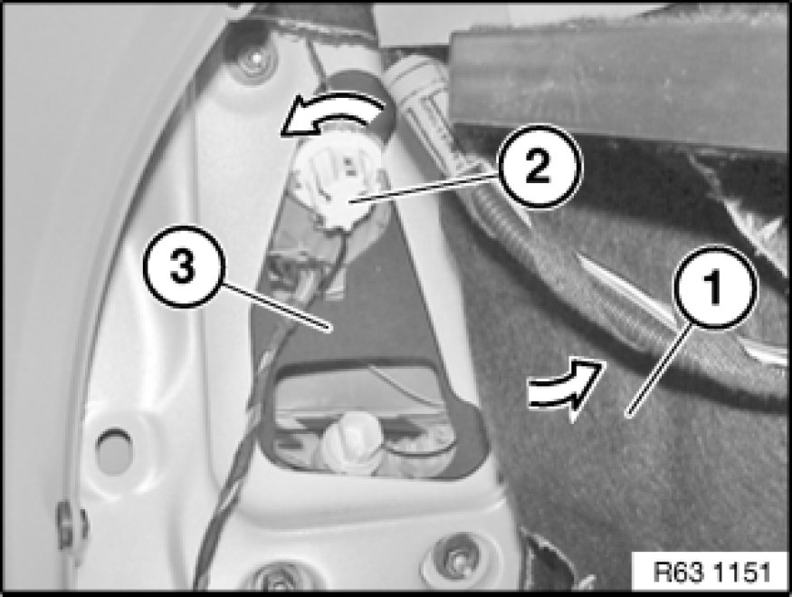

Replacing a Socket Housing for Left or Right Rear Light (From 09/06)
63 21 055 - Replacing a socket housing for left or right rear light (from 09/06)

Warning!
Follow instructions for handling light bulbs (exterior lights) Instructions for Handling Light Bulbs (Exterior Lights).

Side panel:
Necessary preliminary tasks:
- Remove flap in luggage compartment panel Removing and Installing/Replacing Flap In Luggage Compartment Trim, Left or Right
Fold back side trim panel (1) in direction of arrow.
Socket housing for rear light (2) is held by retaining lugs (3) on rear light (6). Clip socket housing for rear light (2) in direction of arrow out of rear light (6).
Press in retaining lugs (5) and remove retaining ring (4) in direction of arrow from socket housing for rear light (2).
Remove brake light bulb Replacing Bulb(s) for Left or Right Rear Light (Side Panel) (From 09/06).
Installation Note:
Retaining lugs (3) and (5) must not be damaged.
Make sure retaining ring (4) is correctly seated on socket housing for rear light (2).
Make sure socket housing for rear light (2) is correctly engaged on rear light (6).

Fold back side trim panel (1) in direction of arrow.
Turn socket housing for rear light (2) in direction of arrow and remove from rear light (3).
Remove direction indicator bulb Replacing Bulb(s) for Left or Right Rear Light (Side Panel) (From 09/06).
Installation Note:
Make sure socket housing for rear light (2) is correctly engaged on rear light (3).
Rear lid:
Necessary preliminary tasks:
- Remove panel for rear lid
Note:
Socket housing for rear light (1) is not included in scope of spare parts.
Turn socket housing for rear light (1) or (2) in direction of arrow and remove from rear light (3).
Remove tail light bulb or rear fog light bulb Replacing Bulb(s) for Left or Right Rear Light (Rear Lid) (From 09/06).
Installation Note:
Make sure socket housings for rear lights (1) and (2) are correctly seated and engaged on rear light (3).